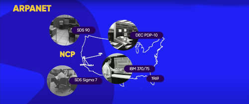
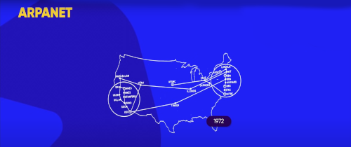
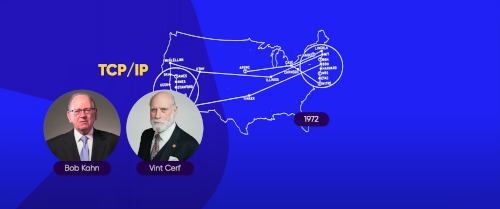
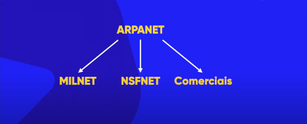
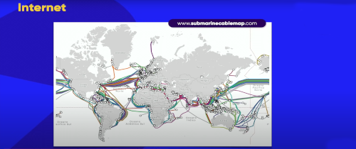
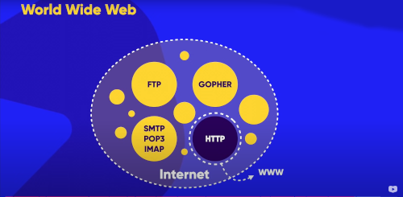
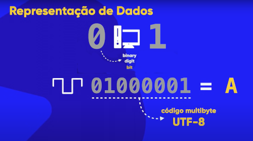
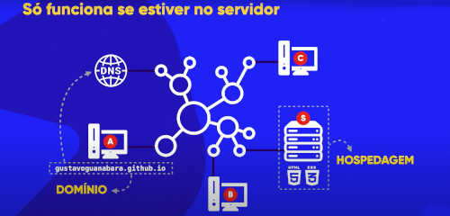
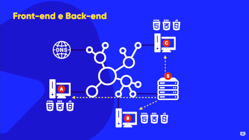

No contexto da Guerra Fria que foi uma guerra baseada em ameaças entre Estados Unidos e União Soviética, a URSS estava a frente com ao lançar o satélite Sputnik que tinha a funçao de mandar beeps da orbita da terra para os cientistas soviéticos captarem da terra e fazerem experiencias e estudos com o satélite. O então presidente do Eua imaginou que a função dele era de espionar o seu país, com isso inventou a DERPA um departamento de inteligencia dos Estados Unidos focado em tecnologia principalmente militar para ajudar o país.
A ARPANET foi uma criação da DERPA que consistia em uma rede de computadores criada para computadores se comunicarem de lugares diferentes chamados de pontos. A rede tinha inclusa 4 computadores diferentes (um em cada ponto), im SDS 90, DEC PDP1O, SDS SIGMA e o IBM 370/75 que se comunicavam em um Protocolo NCP.
Protocolo é o "idioma" que os computadores de sistemas e marcas de diferentes usavam para se entenderem e comunicarem entre eles. Porém o Protocolo NCP não era nada prático, pois para dois computadores trocarem informações toda a rede parava para isso acontecer. Com o tempo já haviam muitos pontos e PCs espalhados pelo Estados Unidos, o que tornou o uso do NCP inviável.
Para resolver o problema do NCP, Bob Kahn criou o que conhecemos hoje o Protocolo TCP que permitia varios Pcs se comunicarem ao mesmo tempo. Algum tempo depois com muitas máquinas redes apareceu o problema de identificaçao, pois haviam muitos pontos e não sabiam qual era qual. Então surgiU Vint Cerf para solucionar e criou o Intertworking protocol (IP) que é um protocolo de identificação de máquinas. Assim foi juntado os dois projetos e foi formado o protocolo TCP/IP que ainda hoje é utilizado e está na versão 6.0.
A ARPANET cresceu muito e houve uma separação para que a parte militar que era o principal uso fosse separada da parte comercial e de estudos. Entao a ARPANET foi dividida em 3 redes: MILNET (militar), NFSNET (estudos e ciência) e a ARPANET (Comercial). Mesmo com a separação as redes (menos a MILNET) tinham a necessidade de ainda se conectarem e formaram a rede Interconnect Neteworking mais conhecida depois como a Internet.
A internet então é um conjunto de redes que conecta o mundo inteiro através de cabos submarinos, que funciona com o seu Pc conectando o computador (servidor) por exemplo do google, e o arquivo que você solicita do servidor é "quebrado" em varias partes pelo TCP/IP e é enviado passando por caminhos e ordens diferentes para o seu Pc.
Tim Bernes e Marc Andressen forão dois caras essencias para criaçao da internet como conhecemos hoje, Tim foi responsavek por criar o HTML (linguagem de Marcaçao para hiper textos) e o Http. Marc Andressen foi responsavel pela criaçao do Mosaic , essas 3 criaçoes foram umas das principais para formação do WWW (World Wide Web).
Tim Bernes criou em 1993 o Protocolo HTTP e foi juntado ao TCP/IP logo depois. HTTP - Hiper Text TransferProtocol que como o nome sugere é um Protocolo de transferencias de hiper textos criado com base em Html utilizado ainda hoje.
HTML é uma abreviação de Hiper Text Markup Language que significa linguagem de marcação para hiper texto (são textos sensíveis que você clica e ele direciona para outro link).
Mosaic é um navegador da Web descontinuado , um dos primeiros a ser amplamente disponível. Foi fundamental na popularização da World Wide Web e da Internet em geral, integrando multimídia , como texto e gráficos. Foi nomeado por seu suporte a vários protocolos da Internet, como Hypertext Transfer Protocol.

A World Wide Web é um sistema de documentos em hipermídia (ou hipermédia) que são interligados e executados na Internet.Os documentos podem estar na forma de vídeos, sons, hipertextos e imagens. Para consultar a informação, pode-se usar um navegador (como o Google Chrome), para descarregar informações (chamadas "documentos" ou "páginas") de servidores web e mostrá-los na tela do usuário. O usuário pode então seguir as hiperligações na página para outros documentos ou mesmo enviar informações de volta para o servidor para interagir com ele.
A internet é uma grande rede que tem varias subredes (varios servidores especializados) que se comunicam, ou seja a WWW esta "dentro" da internet.
Servidores especializado em HTTP
Subrede "dentro"da internet especializado em HTTP
Servidores especializados em transferencia de arquivos
Servidores especializados em hiper textos simples como os de antigamente.
Servidores especializados em transferencia de E-mails.
O computador por ser uma máquina eletronica, só entende duas informações: presença ou ausência de energia,aceso ou apagado. Dessa forma, matemáticamente só podemos trabalhar com dois algarismos: 1 e 0 e são também transmitidos em ondas de rádio.

8 bits = 1 byte
1024 bytes = 1 KB
1024 KB = 1 MB
1024 MB = 1 GB
1024 GB = 1 TB
1024 TB = 1 PB
1024 PB = 1 EB
1024 EB = 1 ZB
1024 ZP = 1 YB
Megabytes (MB) é diferente de megabits (Mb), pois o Megabyte (MB) é referente a armazenamento e Megabits (Mb) é referente a transmissão de dados.
Quando contratamos um serviço de provedor de internet, a empresa que presta o serviço instala a internet através de uma rede que pode ser de telefone ou TV a cabo, e nós o cliente (dispositivo que conecta e pega dados da internet), o problema é que a onda de transmissao do telefone não é reconhecida pelo dispositivo que vai se conectar a internet e vice-versa, para resolver esse probelma a empresa instala um aparelho na sua casa chamado de Modem que é responsave pela modulação e demodulação dessas ondas de transmissão, ou seja ele tranforma a onda para que o outro dispositivo consiga entender esse sinal para enviar e receber dados.
Como ja haviamos visto cliente é o dispositivo que usamos para acessar a internet, sempre que acessamos algum site estamos acessando o servidor desse site que nos transmite arquivos, isso não e diferente por exemplo com o instagram, quando estamos vendo uma foto do insta, estamos acessando aquele arquivo de imagem que esta no servidor do instagram. Nosso dispositivo (cliente) tem um numero de identificação na rede (IP), por exemplo 201.17.81.22, assim a internet nos envia por uma rota na rede ate chegar ao servidor, onde solicitamos a imagem ao servidor do instagram que tambem tem um IP(ex: 32.24.332), o servidor nos retorna o arquivo e assim nos conseguimos ver a imagem.
Para toda vez que nos fomos acessar algum site nos tenhamos que digitar todo esse numero complexo do IP do site, foi criado o DNS, que é uma "agenda eletrônica" que faz a ligacão entre os nomes e o números. Ex: Quando pesquisamos instagram.com o servidor Dns e acessado e ele busca o número IP do outro servidor (sit) e acessa i número que foi buscado.

Para as pessoas acessarem o nosso site temos que ter duas coisas essenciais: dominio e hospedagem, o dominio é o nome que nos temos no servidor DNS para que ele possa identificar e mandar nosso endereço para o cliente, para isso existe nossa Url (ex: gustavo.guanabara.git.io). A hospedagem é como se fosse um aluguel de uma casa que nos pagamos para deixar nossas coisas, logo nós pagamos por uma hospedagem em um servidor que deixa nossos arquivos ou site(nosso código em html e css) hospedado para que os outros possam acessar através da nossa url.
O Domínio como havia dito é o nosso nome único que nos pagamos anualmente para que ele seja disponibilizado na rede para que as pessoas possam acessar através dele.
Hospedagem é um espaço que nos temos que ter para armazenar arquivos, pago mensalmente (um pouco mais caro que o domínio), e devemos ter bastante cuidado ao buscar uma hospedagem e nos atentarmos ao espaço de memória e aos recursos que essa hospedagem nos entrega.
Uniform Resource Locator ou em português Localizado de Recurso Unico é o que mascara ou facilita a vida do cliente ao buscar um site para acessar como www.github.guanabara.com/gustavoguanabara, a url é dividido em: subdominio, domínio, TLD e caminho.
O "www" do exemplo é o subdomínio principal do seu servidor web e pode ter outras nomeclaturas além de www.
O "github" do exemplo que pode ser disponivel até para o seu E-mail, por exemplo "meuemail@github.com".
TLD ou Top Domain Level (domínio de alto nível) é o ".com" do exemplo e pode ser dividido em dois tipos CCTLDs e GTLD.
Generic Top Level Domain com o nome sugere são TLDs mais genéricas ex:
Country Code Top Level Domain são domínios de alto nivel de codigos de países por exemplo:
Os dois não são considerados linguagem de programação, mas podem ser chamadas de linguagem. Não se deve falar Eu programo em HTML E CSS
, mas sim: Eu desenvolvo em HTML e CSS
.
Hyper Text Markup Language
Cascating Style Sheets
HTML, CSS e JavaScript são essenciais para a criação de um site, HTM e Css são linguagens, enquanto JavaScript é uma linguagem de programação, como explicado antes o HTML responsavel por ser o esqueleto do site com textos, imagens,videos e tabelas, o Css é responsavel pelo Design com as cores, sombras, tamanhos e posicionamentos, e para fechar a trinca o JavaScript responsável pelas interações com menus, animações, popups e as validações.
Essa extensão é muito interessante pois com ela você pode ver na pratica a funcao de cada um no site, voce pode desbilitar individualmente ou em conjunto as funcionalidades do CSS e JavaScript, podendo deixar apenas o HTML puro para ver como o site é no seu modo mais simples.
O seu pc (client) pega uma cópia do Html que está no servidor e é disponibilizado no navegador, o namvegador recebe e analisa o código e apresenta de forma visual ao usuário.
O servidor apresenta o mesmo site para todos os dispositivos que acessarem a mesma página, isso é o que chamamos de site estático.
É a parte de desenvolvimento focado para o lado do usuário(client-side). Um desenvolvedor front end é foca na experiencia e interatividade do usuário, por isso um bom desenvolvedor front end estuda sobre experiencia de usuário.
É a parte de desenvolvimento focado para o lado do servidor(serv-side). Um desenvolvedor back end é foca nas entranhas, ou seja na interação do código com o servidor.